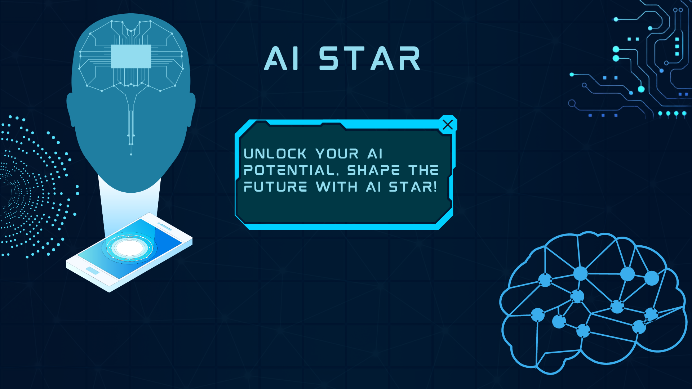
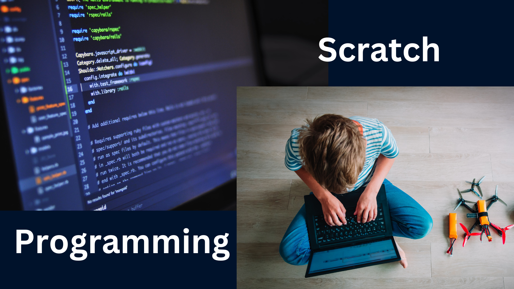
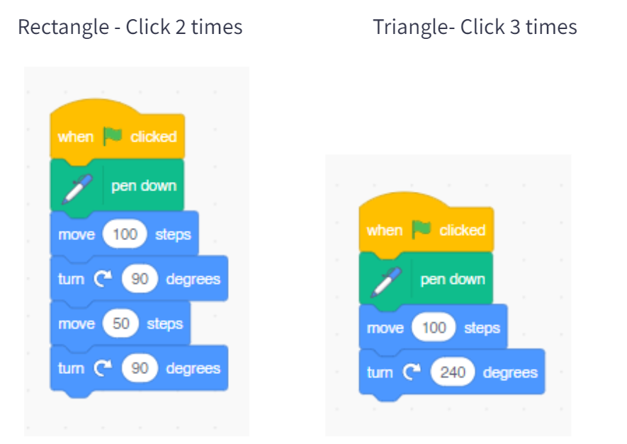
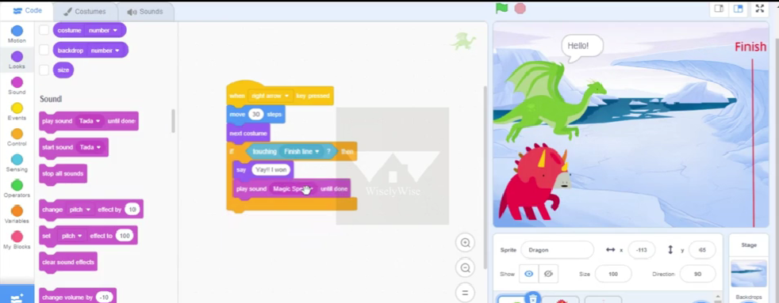
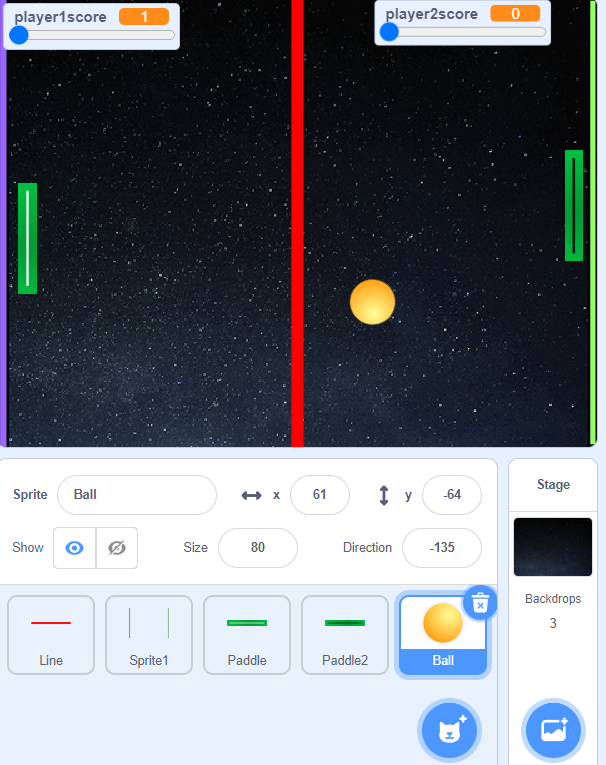
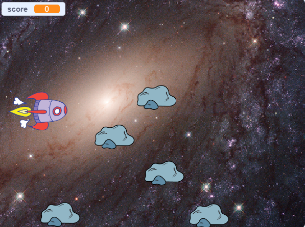
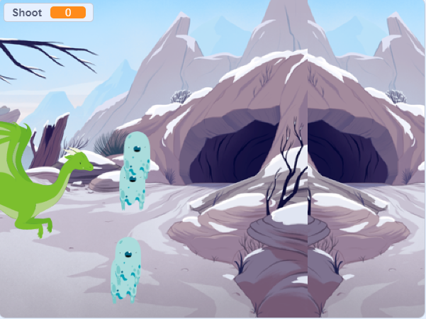

AI Star Tetbook - For grades 3 - 6
Welcome to AI Star, your gateway to the captivating world of artificial intelligence. This online handbook is designed to provide you with an immersive and engaging learning experience as you explore the key concepts, tools, and applications of AI. Let's embark on this exciting journey together and discover why AI is one of the most important and useful technologies of our time.
The Importance of AI:
Before we dive into the exciting course content, let's take a moment to warm up and explore the profound impact of AI on our lives.
Artificial Intelligence (AI) has emerged as one of the most transformative technologies of our time, revolutionizing industries and reshaping the way we live, work, and interact with the world around us. From healthcare to finance, transportation to entertainment, AI is making its mark across diverse sectors, bringing forth a multitude of benefits and opportunities.
Imagine a world where AI-enabled systems analyze vast amounts of medical data to diagnose diseases with unprecedented accuracy, helping doctors save lives. Picture self-driving cars navigating our roads, reducing accidents, and revolutionizing transportation. Envision intelligent virtual assistants that understand our needs, provide personalized recommendations, and make our lives more convenient.
AI is not just about cutting-edge technology; it's about solving complex problems, driving innovation, and improving decision-making processes. By harnessing the power of AI, we can uncover valuable insights from massive datasets, make predictions, automate tasks, and optimize processes. This enables us to work more efficiently, allocate resources effectively, and achieve breakthrough results.
Moreover, AI has the potential to enhance human capabilities and enable new possibilities. It empowers us to overcome limitations, augment our skills, and explore creative solutions to challenges that were once thought insurmountable. By combining human intelligence with the computational power of AI, we can push the boundaries of what is possible and unlock unprecedented levels of innovation.
As we embark on this journey through AI Star, we will delve into the core concepts, applications, and tools that shape the AI landscape. From understanding computing concepts to exploring real-life AI applications, from unleashing creativity with Scratch to mastering Machine Learning, this course will equip you with the knowledge and skills needed to thrive in the world of artificial intelligence.
- Understand the profound impact of AI on various aspects of our lives.
- Discover how AI is transforming industries such as healthcare, finance, transportation, and more.
- Explore how AI is revolutionizing decision-making processes and improving efficiency.
- Learn about the potential of AI to solve complex problems and drive innovation.
- Gain insights into how AI is enhancing human capabilities and enabling new possibilities.
- Recognize the role of AI in addressing global challenges and fostering sustainable development.
Why AI is Useful:
Unleash the potential of artificial intelligence (AI) as we delve into its practical applications and far-reaching benefits. Enhance productivity and efficiency through automation and intelligent systems. Harness AI's analytical prowess to extract valuable insights from vast amounts of data. Elevate customer experiences with personalized recommendations and intelligent virtual assistants. Empower businesses to make data-driven decisions and gain a competitive edge. Join us on this exciting journey as we explore how AI is driving advancements in healthcare, education, cybersecurity, and beyond.
- Uncover the practical applications and benefits of AI across different domains.
- Enhance productivity and streamline processes through automation and intelligent systems.
- Harness the power of AI to analyze vast amounts of data and derive valuable insights.
- Improve customer experiences through personalized recommendations and intelligent virtual assistants.
- Empower businesses to make data-driven decisions and gain a competitive edge.
- Explore how AI is driving advancements in healthcare, education, cybersecurity, and more.
AI Star: Your Path to AI Mastery:

With AI Star, you have the opportunity to unlock your potential and become an AI enthusiast and expert. Engage in interactive learning experiences that cater to all levels of expertise, from beginners to advanced learners. Dive into computing concepts, gaining a solid foundation for understanding AI technologies. Explore the fascinating world of AI applications, from games to real-life use cases. Master the Scratch programming language, a gateway to creative AI projects. Gain hands-on experience with Machine Learning, a crucial aspect of AI, using the intuitive Scratch platform.
Computing Concepts:
In this captivating course, we will take you on a remarkable adventure to explore the fundamental components of computers and the intriguing realm of memory modules. Get ready to delve into the captivating world of computing, where every bit and byte holds the key to AI success.
Harness the Power of Computing Components:
- At AI Star, we demystify the intricate components that make computers tick, empowering you with the knowledge to navigate the AI landscape with confidence.
- Discover the heartbeat of computing as we unravel the significance of memory modules and their role in optimizing performance and data management.
Unlock the Secrets of Memory Division:
- Dive deep into the mesmerizing world of memory division, where computers expertly allocate resources to maximize efficiency and computing power.
- Gain a profound understanding of how memory division enhances performance, enabling your AI projects to run seamlessly.
Embrace the Memory Medley: RAM, ROM, and Cache:
- Embark on a captivating exploration of the memory trio: RAM, ROM, and cache memory. Uncover their unique attributes and unravel the magic they bring to computing.
- From the lightning-fast, temporary storage of Random Access Memory (RAM) to the vital firmware stored in Read-Only Memory (ROM), we leave no byte unturned.
- Prepare to be amazed by the speed and efficiency of cache memory, a hidden gem that stores frequently accessed data, unleashing the full potential of your AI applications.
Enter the Realm of Secondary Memory:
- Immerse yourself in the world of secondary memory, where long-term data storage takes center stage.
- Discover the wonders of hard disk drives (HDDs), solid-state drives (SSDs), and optical storage devices as they safeguard your valuable data, providing a solid foundation for AI endeavors.
Unleash the Power of RAM Varieties:
- Prepare to be captivated by the range of RAM possibilities, each with its own unique strengths and benefits.
- Explore the dynamic performance and cost-effectiveness of Dynamic Random Access Memory (DRAM).
- Discover the lightning-fast capabilities of Static Random Access Memory (SRAM), ideal for high-performance computing needs.
- Embrace the synchronized harmony of Synchronous Dynamic Random Access Memory (SDRAM), unlocking accelerated data transfer rates for your AI projects.
Introduction to AI:
In this remarkable course, we will explore the origins, evolution, and immense impact of AI across various domains. Brace yourself for an exhilarating experience as we dive into thrilling AI applications, witness its transformative power in sports, and delve into the mind-boggling advancements in robotics that shape our daily lives.
Uncover the Origins and Evolution of AI:
- Join us as we trace the roots of AI, unraveling its fascinating journey from its inception to the present day.
- Explore the remarkable advancements and breakthroughs that have propelled AI to the forefront of technological innovation.
- Gain insights into how AI has evolved, shaping the way we live, work, and interact with the world around us.
Experience the Thrill of AI Applications:
- Prepare to be captivated by exciting games that harness the power of AI, such as Quick, Draw!, Semantris, and Emoji Scavenger Hunt.
- Engage in these immersive experiences to witness firsthand how AI can analyze, understand, and respond to human inputs with astonishing accuracy.
- Discover the limitless possibilities of AI applications as they transform entertainment and everyday interactions.
Witness the Transformative Power of AI in Sports:
- Immerse yourself in the world of sports and witness the game-changing impact of AI.
- Explore how AI is revolutionizing sports analytics, enhancing player performance, and providing valuable insights for coaches and teams.
- Experience the thrill of AI-driven technologies that have transformed the way we watch and engage with sports, bringing fans closer to the action than ever before.
Delve into the Incredible Advancements in Robotics:
- Prepare to be amazed by the astonishing advancements in robotics and their integration into our daily lives.
- Discover how AI-powered robots are reshaping industries, from healthcare and manufacturing to hospitality and beyond.
- Explore the vast potential of robotics as they assist us in accomplishing tasks, improving efficiency, and enhancing our overall quality of life.
Scratch:
In this exhilarating course, we will guide you through the process of setting up your Scratch account, navigating the user-friendly workspace, mastering key terminologies, exploring the functionalities of Scratch, and ultimately, creating your own interactive projects. Get ready to unleash your imagination and put your newfound skills to the test as we embark on an exciting journey of creativity and programming mastery.

Set Up Your Scratch Account and Navigate the User-Friendly Workspace:
- Begin your Scratch adventure by setting up your account, giving you access to a world of endless possibilities.
- Seamlessly navigate the intuitive and user-friendly workspace, designed to empower even beginners to dive into the world of programming with ease.
Familiarize Yourself with Key Terminologies:
- Lay a solid foundation for your programming journey by familiarizing yourself with key terminologies used in Scratch.
- Gain a comprehensive understanding of essential concepts, ensuring you are equipped to communicate and explore Scratch's functionalities effectively.
Discover the Functionalities of Scratch:
- Unleash your creativity as you delve into the vast range of functionalities that Scratch offers.
- Harness the power of blocks, sprites, and scripts to design interactive and engaging projects that showcase your unique ideas.
Master the Art of Creating Shapes and Design Interactive Projects:
- Ignite your imagination as you master the art of creating shapes and bring them to life in Scratch.
- Learn to manipulate colors, sizes, and movements to design captivating visuals and explore the endless possibilities of creative expression.

Put Your Skills to the Test: Create an Exciting games Using Scratch:
Race Game
- Apply your newfound knowledge and skills by taking on the exhilarating challenge of creating your own race game.
- Utilize Scratch's powerful tools and features to design a thrilling and interactive gaming experience, putting your creativity and programming abilities to the test.

Pong Game
The Pong game created in Scratch is a classic and addictive arcade game that brings hours of fun and competition. Players control paddles on opposite sides of the screen, aiming to hit the ball and prevent it from reaching their side. With intuitive controls and engaging gameplay, the Pong game in Scratch challenges players to react quickly, strategize their moves, and outwit their opponents. It showcases the power of Scratch's visual programming interface in creating interactive and entertaining games that captivate players of all ages.

Space Shooter Game
The space shooter game created in Scratch is an exciting and engaging experience. Players control a rocket using arrow keys and can unleash lasers by pressing the space key. The objective is to destroy rocks floating in space by shooting lasers at them. Each successful hit scores points, adding to the player's score. The game offers a thrilling combination of quick reflexes and strategic aiming as players navigate through the asteroid field, dodging obstacles and blasting rocks to achieve high scores. It provides an immersive and enjoyable gaming experience, challenging players to improve their skills and beat their own records.

Machine Learning:
In this transformative course, we will guide you through understanding the core principles and applications of Machine Learning, exploring real-world examples that showcase its potential and impact. Get ready to embark on a hands-on journey, where you will work on a Machine Learning project using Scratch, train models with data, test their performance, refine them for optimal results, and witness the magic as you implement the trained model through code. Unleash the power of Machine Learning and harness the capabilities of predictive intelligence like never before.
Understand the Core Principles and Applications of Machine Learning:
- Dive into the fascinating realm of Machine Learning as we explore its core principles and concepts.
-
Gain a comprehensive understanding of how Machine Learning algorithms learn from data, adapt, and make predictions.
-
Explore the wide-ranging applications of Machine Learning across industries, from healthcare and finance to marketing and more.
Explore Real-World Examples Highlighting the Potential and Impact of Machine Learning:
- Immerse yourself in real-world examples that showcase the remarkable potential and impact of Machine Learning.
- Witness how Machine Learning algorithms have revolutionized recommendation systems, fraud detection, image recognition, and other domains, transforming the way we live and work.
Gain Hands-On Experience: Work on a Machine Learning Project Using Scratch:
- Roll up your sleeves and dive into a hands-on Machine Learning project, using the powerful Scratch platform.
- Learn how to collect and preprocess data, select appropriate algorithms, and train models to make accurate predictions.
- Immerse yourself in the iterative process of testing and refining your models to achieve optimal performance.

Write Code on Scratch to Implement the Trained Model and Witness its Predictive Capabilities:
- Witness the magic of Machine Learning as you write code on Scratch to implement the trained model.
- Experience the thrill of seeing your model in action, making predictions based on the insights it has gained from the training data.
- Explore the vast possibilities of using Machine Learning in your own projects, unlocking the power of predictive intelligence.
Conclusion:
Get ready to explore computing concepts, discover exciting AI applications, unleash your creativity through Scratch, and master the foundations of Machine Learning.
Why Choose AI Star?
Gain In-Depth Understanding:
Our comprehensive course will provide you with a deep understanding of AI, its importance, and its relevance in today's world. You will gain insights into computing concepts, AI applications, and the fundamentals of Machine Learning, equipping you with a solid foundation for your AI journey.
Unlock Your Creative Potential:
With Scratch as a tool in your arsenal, you will unlock your creativity and learn to bring your ideas to life. Dive into the world of visual programming, create interactive projects, and witness the power of your own imagination as you design and develop unique creations.
Real-World Applications:
Our course goes beyond theory and delves into real-world applications of AI. Explore how AI is revolutionizing industries such as healthcare, finance, and transportation, and discover how it can be harnessed to address complex challenges and drive innovation.
Join a Thriving Community:
Enrolling in AI Star means becoming part of a vibrant community of AI enthusiasts and professionals. Connect with like-minded individuals, engage in discussions, and collaborate on exciting projects. Benefit from networking opportunities and stay updated on the latest advancements in AI.
Shape the Future:
By equipping yourself with AI knowledge and skills, you will be at the forefront of shaping the future. Whether you aspire to make a difference in your career, launch your own AI projects, or contribute to groundbreaking research, AI Star will empower you to turn your ambitions into reality.
Unleash your potential, embrace the power of AI, and embark on a remarkable journey with AI Star as your trusted guide. Together, let's unlock a world of possibilities and make a meaningful impact with AI.